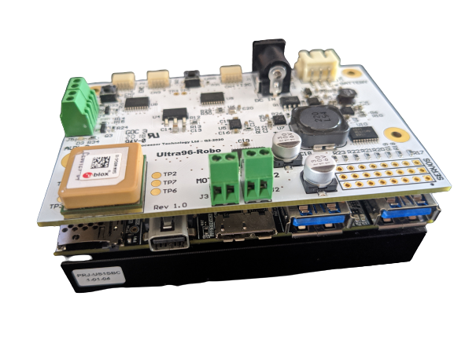

ROBO96V2 Mezzanine¶
Description¶
The ROBO96V2 Mezzanine is an add-on/expansion board for SoC based development platforms designed to the 96Boards specification. The mezzanine card is a multi sensor card that has 1x Ethernet, 1x internal GPS, 1x Pixahawk GPS Port, 8xServos, 1x barometer, 1xIMU, 1x Motion Sensor connectivity to the carrier development platform.

Datasheet